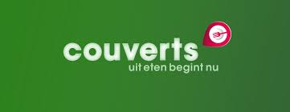
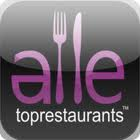
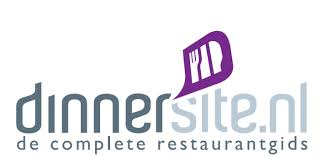
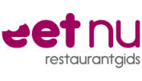
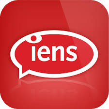
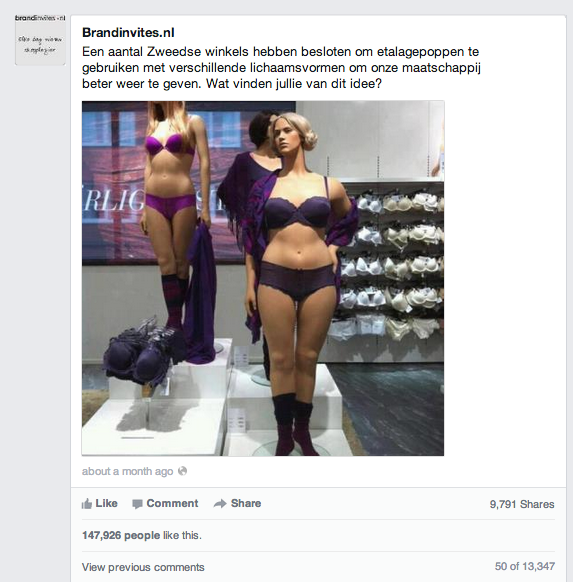
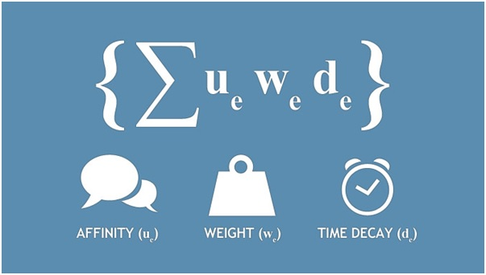

Wie is Tim_online / wie zijn wij?
- Kees Zorge
- Lieneke de Wolf
Wat doen wij voor BO²?
- Sponsor van BO² en online partner
- Nulmetingen uitvoeren en bedrijven adviseren
- BO² online future proof maken
Programma
- Belang en Kracht van online
- Zoekmachineoptimalisatie
- Review sites
- Social media: welk kanaal opnemen in de marketingmix?
- Facebook: hoe haal je het maximale eruit
- Nulmetingen
Wat er niet in het programma past :smile:
- Email marketing
- Belang van bloggen
- Mogelijkheden online marketing
- Google Analytics
- Enz...
Nederland = Internet
- NL koploper qua gebruik van tablet per huishouden
- Wereldwijd in top 5 van aantal smartphone gebruikers per inwoner
- 96% van huishoudens heeft vorm van internet
- Gemiddeld 3 apparaten om mee online te gaan
- In reis- en hospitalitybranche: 1 op de 3 zoekopdrachten komt van mobiel apparaat
Horeca: belang van online
Wie zoekt online?
- Eerste keer op zoek naar restaurant: 43% zoekt info online (5% on- en offline, 52% offline)
- Meer geld uitgeven = meer online informatie zoeken
Hoe wordt online gezocht?
- Via zoekmachines (Google, Yahoo, Bing)
- Eigen websites van restaurantbedrijven
- Restaurantverzamelwebsites
Bestede tijd
- Gemiddeld 30 minuten om restaurant te zoeken
- 25 min op resto websites
- 5 min op overkoepelende restaurantwebsites
Kortom; een goede website is van
levensbelang!
Zo is jouw bedrijf future ready
(online)!
- Website is het visitekaartje van jouw bedrijf
- Website is responsive! Op alle apparaten gebruiksvriendelijk en schaalt mee; mobile friendly
- Jouw website is voorzien van actueel nieuws
- Optimalisatie van lokale vindbaarheid in zoekresultaten en GoogleMaps
- Claim bedrijvenpagina van Google+ (info, foto’s, StreetView)
- Zorg voor goede vermeldingen op reviewsites
- Kies de juiste social media platformen en zorg voor social interest
Zoekoptimalisatie (SEO)
- Wat is SEO?
- Waarom is het belangrijk?
- Hoe zet je het in? (belangrijk onderdeel: Social Media)
Zoekmachineoptimalisatie (Engels: search engine optimization of SEO[1]) is een onderdeel van zoekmachinemarketing en kan worden gedefinieerd als het geheel aan activiteiten bedoeld om een webpagina hoog te laten scoren in de organische zoekresultaten van een zoekmachine, op de voor die webpagina relevante trefwoorden, trefwoordcombinatie(s) casu quo zoekterm(en). Aangezien een vermelding in die organische resultaten gratis is, vormen deze zoekresultaten een interessant alternatief voor zoekmachineadverteren.
Dus wat is SEO?
- Proces om site beter zichtbaar te maken in zoekresultaten van zoekmachines
- Doel: meer bezoekers en klanten naar je site
- Gewenste resultaat = conversie
Zoekoptimalisatie (SEO)
- Bepaal de juiste trefwoorden/keywords
- Maak SEO vriendelijke teksten, urls, titels
- Technische optimalisatie website (structuur / inhoud / indeling / inhoud / opmaak)
- Maar ook;
- Snelheid
- Responsive
- Versheid
- Links bouwen / website promotie
- Inzet social media
- meten = weten -> verbeteren
Review Sites
ca. 20 in Nederland





Kracht van reviews
- Sociaal advies werkt
- Consumentenmening telt (80% laat meewegen; objectieve informatie)
- Multi-inzetbaar
- Stimuleren van plaatsing (korting, kadootje)
- Reviews zijn goed voor SEO (‘sterren’ rich snippets op Google)
Social Media
Welk platform? En welke invloed voor horeca?
- LinkedIn: 1%
- Twitter: 4%
- Facebook: 34%
Facebook wereldwijd
- Opgericht in 2004 als sociaal netwerk voor studenten door Mark Zuckerberg
- 1,23 miljard maandelijks actieve gebruikers wereldwijd
- 757 miljoen dagelijks actief
- Gemiddeld 8,3 uur per maand op Facebook
- 945 miljoen van 1,23 miljard (ook) mobiel gebruik van Facebook
Facebook Nederland
- 9 miljoen geregistreerde Facebook-accounts
- Facebook gebruik om Q4/2013: 9,7 tot 9,8 miljoen Nederlandse bezoekers.
Inzet van Facebook; waarom?
- Doelgroep bereiken en activeren
- Naamsbekendheid
- Klanten vinden en binden
- Imago versterken
- Van klanten ‘fans’ maken en virale verspreiding optimaliseren
- Delen van kennis en informative
- Online discussie over bedrijf bevorderen
- Hoe? Bedrijfsactiviteiten beschrijven, communicatie met fans
Facebook pagina’s van deelnemers
- Alle 9 genomineerden hebben een Facebookpagina
- Tussen 180 –> 3000 likers
- Kwaliteit van fans is hoog!
- Recensies bijna overal gebruikt en ingevuld
- Informatie wisselend ingevuld
- Activiteit verschilt behoorlijk
- Weinig gebruik van acties via apps
Hoe haal je het maximale uit Facebook?
Negen tips!
Overwegingen
- Stap voor stap
- Plan Do Check Act
- Geen gouden regels, wel tips en adviezen
Tip 1: Op onderzoek - Kijk en Leer
- Zoek pagina’s van concurrenten en aanverwante bedrijven
- Zoek op naam / trefwoord (geen 100% garantie dat je alles vindt) of check de website van je concurrent op FB aanwezigheid
- Wat is de inhoud van de posts? Waar wordt het meest op gereageerd? Foto’s / links / video’s / vragen?
- Hoeveel mensen plaatsen een bericht op de pagina? Hoeveel reageren? (zie aantal likers /waren hier/ praten hierover’)
- Heeft een pagina speciale tabs?
- Kijk ook welke berichten niet werken... en doe het beter
Tip 2: Optimaliseer je pagina
- Omslagfoto
- Varieer regelmatig
- Zorg voor call to action en informatie daarbij
- Aansprekende beelden
- Laat klanten zien die het product gebruiken
- Profielfoto
Optimaliseer je pagina
- Zorg voor goede omschrijving op informatiepagina; openingstijden, contactgegevens, parkeermogelijkheden, type restaurant
- Maak goede url aan
- Vermeld mijlpalen (opening, nieuw pand, verbouwing, gewonnen prijs)
- Maak gebruik van tabs
- Maak gebruik van de Menu optie, NIEUW!!
Tip 3: Wat werkt?
- Deel relevante informatie (80-20%)
- Belangrijk nieuws, persberichten
- Evenement in de wijk / stad
- Informatie leveranciers
- Contentcuratie; sluit aan bij beleving doelgroep
- Be good & let them tell it
Brandinvites.nl

- 3800 fans
- 150.000 likes
- 10.000 keer gedeeld
Wat werkt?
- Laat zien wat je in huis hebt
- Foto’s van gerechten (seizoensmenu, best verkochte gerechten)
- Foto’s van interieur, tuin, terras, sfeer
- Must: goede kwaliteit en omschrijving!
- Video
- Geen overkill
- Geef een kijkje in de keuken
- Achter de schermen
- Info over voorraad, inkoop, ingredienten
- Leveranciers over de vloer
- Foto? Video!
Wat werkt?
- Maak het persoonlijk en wees authentiek
- Wie werken er? Wie is de eigenaar?
- Wat is zijn verhaal?
- Personeel uitlichten
- Nieuwe collega’s voorstellen
- Afscheid, bedanken
- Geleverde prestaties
- Nieuw personeel
- Ambassadeursfunctie – viraal bereik groot door vrienden van personeel
- Let op je ‘tone of voice’!
Wat werkt? Interactie!
- Reageer op vragen
- Vraag feedback, stel vragen
- Bedank voor de feedback
- Pas op voor discussie
- Zorg voor fun en entertainment
Tip 4: Maak een Content Kalender
- Wat moet ik plaatsen? En wanneer?
- Soorten kalenders
- Lange termijn kalender: events, promoties, bijzondere gelegenheden door het jaar, feestdagen
- Week kalender
- maandag; link naar een interessant artikel / wetenswaardigheid
- dinsdag: foto, genomen in de zaak
- woensdag; vraag van de dag (menu keuze, ingredienten...
- donderdag: fan van de week
- vrijdag: reclame voor aanbieding
Tip 5: doorgrond de EdgeRank
- Formule bepaalt hoeveel mensen je bericht te zien krijgen
- Like, delen, reactie, tags, frequentie… telt allemaal mee om ‘gewicht’ te bepalen
- Hoe hoger het gewicht, hoe meer kans op nieuwsoverzicht
- Affiniteit: zorg dat je berichten bekeken, geliked, gedeeld worden
- Gewicht (waarde): niet alles heeft zelfde gewicht
- Actualiteit (tijd): hoe vaak en wanneer

Tip 6: Publiek opbouwen
- Promoot je FB pagina. Waar?
- Menukaart, flyers, viltjes, narrowcasting
- Nieuwsbrief
- Email handtekening
- Visitekaartjes
- Nieuwsbrief
- Website (like butten / FB knop)
- Overige marketingkanalen (advertenties, brochure, uithangbord)
Tip 6: Publiek opbouwen
- Mond-op-mond reclame
- Nodig je vrienden / klantenbestand uit, via ‘publiek opbouwen’
- Email contactpersonen (hotmail/outlook/gmail enz)
- Deel je bedrijfspagina op je persoonlijke FB account
- Advertentie maken: betalen voor het promoten van je pagina
- Volg bedrijfspagina’s van bedrijven; zelf in de picture + inspiratie
- Beloon je fans; met bijv korting
- Organiseer acties
Tip 7: Acties en campagnes
- Speciale regels voor acties: Promotion Guidelines
- Gebruik van Facebook App
Voordelen Facebook App
- Campagne in eigen huisstijl
- Meetbaar (Google Analytics)
- Gebruikers info en toestemmingen
- Open Graph functies: gebruikersacties doorvertaald naar Nieuwsoverzicht, Ticker, Tijdlijn
- Social Channels functies
Promoties op Facebook
(standaard apps)
- Verloting van een prijs (Sweepstake) met/zonder referral bonus
- Groepsdeals, coupons of kortingscodes – tip! Facebook aanbieding
- User-generated foto-, video- of essaywedstrijd
- Quizzen, polls en stemmen op foto’s
- Fan Only kado’s
Tip 8: Adverteren
- Betaald adverteren (cpc / dagelijks budget)
- Interesses
- Demografische kenmerken
- Aansprekende tekst
- Image!
- Gepromote berichten
- berichten nogmaals gepost (incl. pagina/locatie/app)
- verspreiding binnen / buiten eigen likers bestand
- kosten iets lager dan adverteren
- Aanbieding (onbetaald)
Tip 9: Meten is weten: statistieken
- Starten met Facebook Insights
- Let op: Facebook Insights is vernieuwd
- Evt integratie met Google Analytics
- Diverse tools om statistieken te meten
Nulmeting
- Hoe scoort je website
- Wat is je online presence
- Hoe presteert je Facebook pagina
- Per genomineerde een rapportage / advies
- Persoonlijke toelichting volgende week, ca half uur werk (mail naar lieneke@tim-online.nl)
- Eind september nogmaals een meting
- Wordt meegenomen in de totale beoordeling (stemmen, ...)
Bedankt voor uw aandacht en... Veel Succes!
En… like ons en vertel wat je van ons verhaal vond :smile: